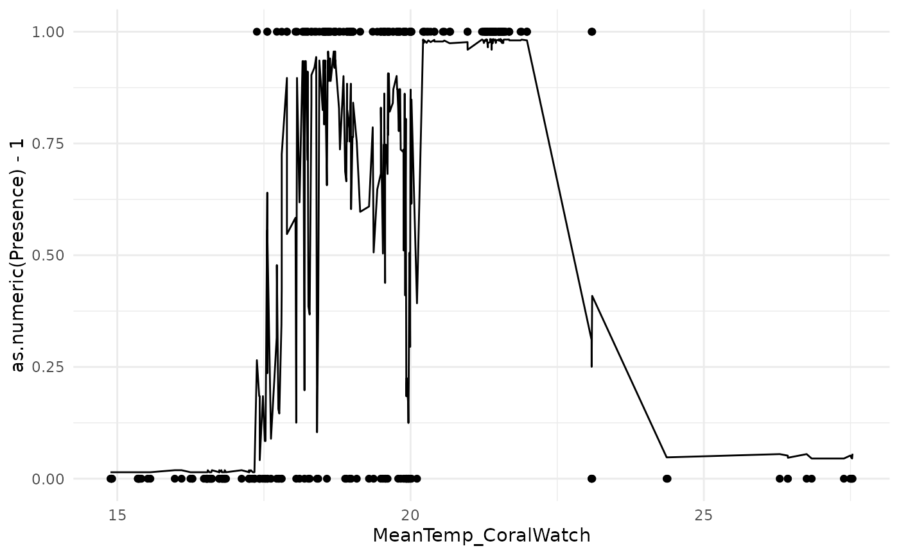
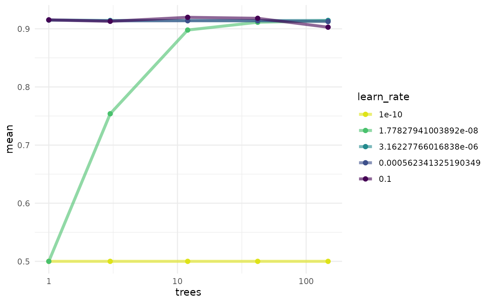
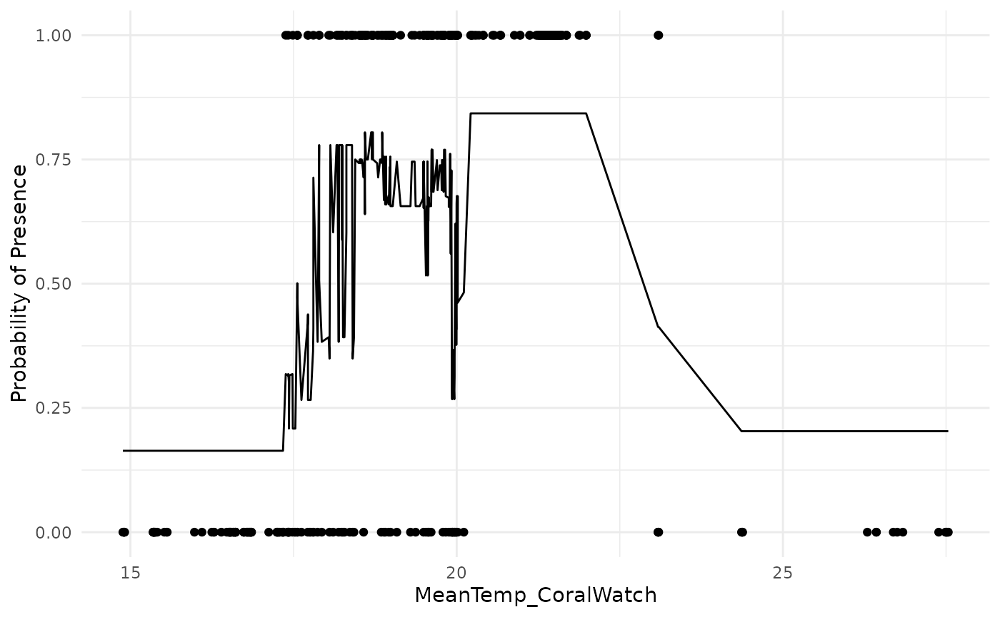
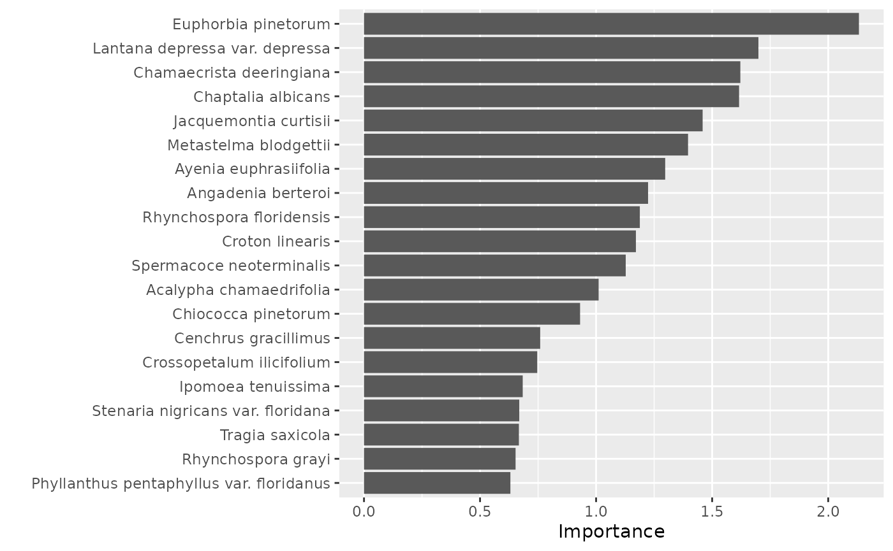
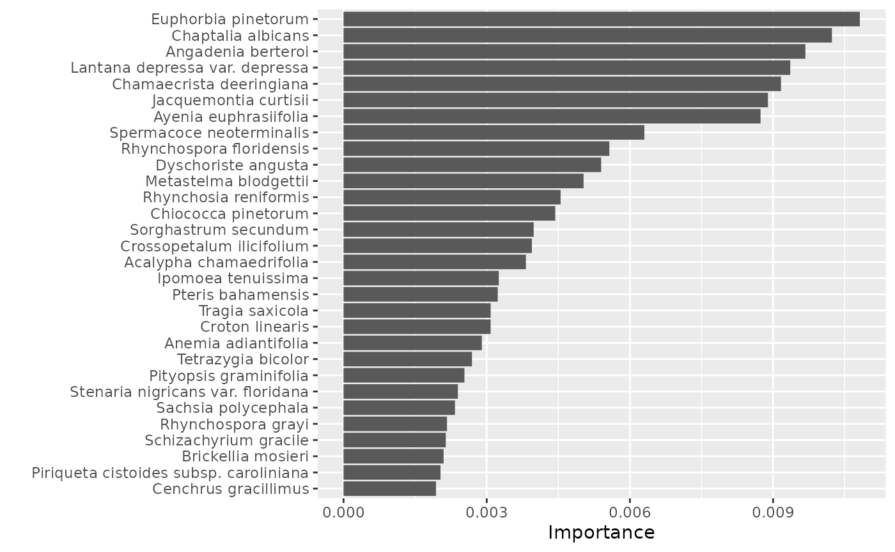

Forests of the Future: Week 7 Lecture
week_7_lecture.RmdModel Tuning
- Going back to our reef fish example, we saw the we had some major overfitting issues with our boosted tree model.
- In this class we will see how to tune hyper-parameters of model to improve performance.
Test Set
- Split off a test set to evaluate model at the very end!
set.seed(1234)
data_split <- initial_split(fish_dat, 0.8, strata = Presence)
train_data <- training(data_split)
test_data <- testing(data_split)
train_data## # A tibble: 308 × 25
## SpeciesName SiteC…¹ Abund…² Sampl…³ MeanT…⁴ MinTe…⁵ MaxTe…⁶ SDTem…⁷ ECOre…⁸
## <chr> <chr> <dbl> <dbl> <dbl> <dbl> <dbl> <dbl> <fct>
## 1 Thalassoma p… AND2 0 164 17.6 14.1 22.8 2.85 Albora…
## 2 Thalassoma p… AND25 0 173 19.0 14.0 25.4 4.01 Albora…
## 3 Thalassoma p… AND37 0 173 19.1 14.0 26.1 4.20 Albora…
## 4 Thalassoma p… AND43 0 173 18.9 14.3 25.3 3.66 Albora…
## 5 Thalassoma p… AND50 0 164 18.2 14.2 23.5 3.02 Albora…
## 6 Thalassoma p… AND51 0 164 18.3 14.1 23.8 3.12 Albora…
## 7 Thalassoma p… AND54 0 173 18.6 14.2 24.6 3.41 Albora…
## 8 Thalassoma p… AND56 0 164 17.8 14.2 22.1 2.66 Albora…
## 9 Thalassoma p… AND60 0 164 18.4 14.9 22.2 2.53 Sahara…
## 10 Thalassoma p… AND63 0 173 18.9 14.4 26.3 3.85 Albora…
## # … with 298 more rows, 16 more variables: Presence <fct>, OLRE <fct>,
## # MaxAbundance <dbl>, N_Obs <int>, Confidence_NObs <dbl>, T_Range_Obs <dbl>,
## # Confidence_TRange_Obs <dbl>, N_Absences_T_Upper <int>,
## # N_Absences_T_Lower <int>, Confidence_Occ_Tupper <dbl>,
## # Confidence_Occ_Tlower <dbl>, T_Upper_Absences <dbl>,
## # T_Lower_Absences <dbl>, T_Mean_Absences <dbl>, NEOLI <dbl>,
## # Depth_Site <dbl>, and abbreviated variable names ¹SiteCode, …
test_data## # A tibble: 77 × 25
## SpeciesName SiteC…¹ Abund…² Sampl…³ MeanT…⁴ MinTe…⁵ MaxTe…⁶ SDTem…⁷ ECOre…⁸
## <chr> <chr> <dbl> <dbl> <dbl> <dbl> <dbl> <dbl> <fct>
## 1 Thalassoma p… AND1 3 217 17.5 14.1 22.6 2.75 Albora…
## 2 Thalassoma p… AND12 100 173 18.5 14.0 24.7 3.67 Albora…
## 3 Thalassoma p… AND16 0 173 18.8 14.0 25.2 3.89 Albora…
## 4 Thalassoma p… AND18 13 173 18.9 14.0 25.2 3.92 Albora…
## 5 Thalassoma p… AND19 1 173 19.0 14.0 25.5 4.08 Albora…
## 6 Thalassoma p… AND21 11 173 18.8 14.0 25.2 3.87 Albora…
## 7 Thalassoma p… AND27 14 173 19.0 14.0 25.5 4.08 Albora…
## 8 Thalassoma p… AND29 17 173 19.0 14.0 25.4 4.03 Albora…
## 9 Thalassoma p… AND3 8 164 17.7 14.1 22.9 2.90 Albora…
## 10 Thalassoma p… AND4 0 164 17.9 14.1 23.3 3.01 Albora…
## # … with 67 more rows, 16 more variables: Presence <fct>, OLRE <fct>,
## # MaxAbundance <dbl>, N_Obs <int>, Confidence_NObs <dbl>, T_Range_Obs <dbl>,
## # Confidence_TRange_Obs <dbl>, N_Absences_T_Upper <int>,
## # N_Absences_T_Lower <int>, Confidence_Occ_Tupper <dbl>,
## # Confidence_Occ_Tlower <dbl>, T_Upper_Absences <dbl>,
## # T_Lower_Absences <dbl>, T_Mean_Absences <dbl>, NEOLI <dbl>,
## # Depth_Site <dbl>, and abbreviated variable names ¹SiteCode, …Make a recipe
- Transform data to make it less skewed and centered on zero.
RF_recipe <- recipe(train_data,
Presence ~ MeanTemp_CoralWatch + Depth_Site) %>%
step_YeoJohnson(MeanTemp_CoralWatch, Depth_Site) %>%
step_normalize(MeanTemp_CoralWatch, Depth_Site)
RF_recipe## Recipe
##
## Inputs:
##
## role #variables
## outcome 1
## predictor 2
##
## Operations:
##
## Yeo-Johnson transformation on MeanTemp_CoralWatch, Depth_Site
## Centering and scaling for MeanTemp_CoralWatch, Depth_SiteMake a model
- Setup the model object
RF_mod <-
boost_tree() %>%
set_engine('xgboost') %>%
set_mode('classification')
RF_mod## Boosted Tree Model Specification (classification)
##
## Computational engine: xgboostA workflow is a recipe and a
model
## ══ Workflow ════════════════════════════════════════════════════════════════════
## Preprocessor: Recipe
## Model: boost_tree()
##
## ── Preprocessor ────────────────────────────────────────────────────────────────
## 2 Recipe Steps
##
## • step_YeoJohnson()
## • step_normalize()
##
## ── Model ───────────────────────────────────────────────────────────────────────
## Boosted Tree Model Specification (classification)
##
## Computational engine: xgboostUse fit to run a workflow then visualize
predictions
Run the following code:
RF_fit <- RF_wf %>%
fit(train_data)
RF_train_preds <- augment(RF_fit, train_data)
ggplot(RF_train_preds, aes(MeanTemp_CoralWatch, as.numeric(Presence) - 1)) +
geom_line(aes(y = .pred_1)) +
geom_point() +
theme_minimal()
How good were the predictions on the test data?
## # A tibble: 1 × 3
## .metric .estimator .estimate
## <chr> <chr> <dbl>
## 1 roc_auc binary 0.911How to tune the model to improve performance
- We use
tune()as a placemarker for a hyper-parameter
RF_mod <-
boost_tree(trees = tune(), learn_rate = tune()) %>%
set_engine('xgboost') %>%
set_mode('classification')
RF_wf <- workflow() %>%
add_recipe(RF_recipe) %>%
add_model(RF_mod)
RF_wf## ══ Workflow ════════════════════════════════════════════════════════════════════
## Preprocessor: Recipe
## Model: boost_tree()
##
## ── Preprocessor ────────────────────────────────────────────────────────────────
## 2 Recipe Steps
##
## • step_YeoJohnson()
## • step_normalize()
##
## ── Model ───────────────────────────────────────────────────────────────────────
## Boosted Tree Model Specification (classification)
##
## Main Arguments:
## trees = tune()
## learn_rate = tune()
##
## Computational engine: xgboostResamples for Cross Validation
fish_folds <- vfold_cv(train_data, v = 6, repeats = 2, strata = Presence)
fish_folds## # 6-fold cross-validation repeated 2 times using stratification
## # A tibble: 12 × 3
## splits id id2
## <list> <chr> <chr>
## 1 <split [256/52]> Repeat1 Fold1
## 2 <split [256/52]> Repeat1 Fold2
## 3 <split [256/52]> Repeat1 Fold3
## 4 <split [256/52]> Repeat1 Fold4
## 5 <split [258/50]> Repeat1 Fold5
## 6 <split [258/50]> Repeat1 Fold6
## 7 <split [256/52]> Repeat2 Fold1
## 8 <split [256/52]> Repeat2 Fold2
## 9 <split [256/52]> Repeat2 Fold3
## 10 <split [256/52]> Repeat2 Fold4
## 11 <split [258/50]> Repeat2 Fold5
## 12 <split [258/50]> Repeat2 Fold6Create Hyperparameter Grid
tree_grid <- grid_regular(trees(range = c(0, 5), trans = scales::log_trans()),
learn_rate(),
levels = 5)
tree_grid## # A tibble: 25 × 2
## trees learn_rate
## <int> <dbl>
## 1 1 0.0000000001
## 2 3 0.0000000001
## 3 12 0.0000000001
## 4 42 0.0000000001
## 5 148 0.0000000001
## 6 1 0.0000000178
## 7 3 0.0000000178
## 8 12 0.0000000178
## 9 42 0.0000000178
## 10 148 0.0000000178
## # … with 15 more rowsRun the model on a grid of hyper-parameters
RF_res <- RF_wf %>%
tune_grid(fish_folds,
grid = tree_grid,
control = control_grid(save_pred = TRUE),
metrics = metric_set(roc_auc))
RF_res## # Tuning results
## # 6-fold cross-validation repeated 2 times using stratification
## # A tibble: 12 × 6
## splits id id2 .metrics .notes .predicti…¹
## <list> <chr> <chr> <list> <list> <list>
## 1 <split [256/52]> Repeat1 Fold1 <tibble [25 × 6]> <tibble [0 × 3]> <tibble>
## 2 <split [256/52]> Repeat1 Fold2 <tibble [25 × 6]> <tibble [0 × 3]> <tibble>
## 3 <split [256/52]> Repeat1 Fold3 <tibble [25 × 6]> <tibble [0 × 3]> <tibble>
## 4 <split [256/52]> Repeat1 Fold4 <tibble [25 × 6]> <tibble [0 × 3]> <tibble>
## 5 <split [258/50]> Repeat1 Fold5 <tibble [25 × 6]> <tibble [0 × 3]> <tibble>
## 6 <split [258/50]> Repeat1 Fold6 <tibble [25 × 6]> <tibble [0 × 3]> <tibble>
## 7 <split [256/52]> Repeat2 Fold1 <tibble [25 × 6]> <tibble [0 × 3]> <tibble>
## 8 <split [256/52]> Repeat2 Fold2 <tibble [25 × 6]> <tibble [0 × 3]> <tibble>
## 9 <split [256/52]> Repeat2 Fold3 <tibble [25 × 6]> <tibble [0 × 3]> <tibble>
## 10 <split [256/52]> Repeat2 Fold4 <tibble [25 × 6]> <tibble [0 × 3]> <tibble>
## 11 <split [258/50]> Repeat2 Fold5 <tibble [25 × 6]> <tibble [0 × 3]> <tibble>
## 12 <split [258/50]> Repeat2 Fold6 <tibble [25 × 6]> <tibble [0 × 3]> <tibble>
## # … with abbreviated variable name ¹.predictionsBest models?
We can see the best models using the show_best()
function.
RF_res %>%
show_best()## # A tibble: 5 × 8
## trees learn_rate .metric .estimator mean n std_err .config
## <int> <dbl> <chr> <chr> <dbl> <int> <dbl> <chr>
## 1 12 0.1 roc_auc binary 0.920 12 0.00956 Preprocessor1_Model23
## 2 42 0.1 roc_auc binary 0.918 12 0.0104 Preprocessor1_Model24
## 3 1 0.000562 roc_auc binary 0.915 12 0.00898 Preprocessor1_Model16
## 4 1 0.1 roc_auc binary 0.915 12 0.00898 Preprocessor1_Model21
## 5 1 0.00000316 roc_auc binary 0.915 12 0.00895 Preprocessor1_Model11We can plot all the results using collect_metrics() to
collect our roc_auc values and then directly feed them into
a ggplot2 plot.
RF_res %>%
collect_metrics() %>%
mutate(learn_rate = factor(learn_rate)) %>%
ggplot(aes(trees, mean, color = learn_rate)) +
geom_line(size = 1.5, alpha = 0.6) +
geom_point(size = 2) +
scale_color_viridis_d(begin = .95, end = 0) +
scale_x_log10() +
theme_minimal()
Final Fit
best_tree <- RF_res %>%
select_best("roc_auc")
final_wf <- RF_wf %>%
finalize_workflow(best_tree)
final_wf## ══ Workflow ════════════════════════════════════════════════════════════════════
## Preprocessor: Recipe
## Model: boost_tree()
##
## ── Preprocessor ────────────────────────────────────────────────────────────────
## 2 Recipe Steps
##
## • step_YeoJohnson()
## • step_normalize()
##
## ── Model ───────────────────────────────────────────────────────────────────────
## Boosted Tree Model Specification (classification)
##
## Main Arguments:
## trees = 12
## learn_rate = 0.1
##
## Computational engine: xgboost
final_fit <-
final_wf %>%
last_fit(data_split)
final_fit## # Resampling results
## # Manual resampling
## # A tibble: 1 × 6
## splits id .metrics .notes .predictions .workflow
## <list> <chr> <list> <list> <list> <list>
## 1 <split [308/77]> train/test split <tibble> <tibble> <tibble> <workflow>
final_fit %>%
collect_metrics()## # A tibble: 2 × 4
## .metric .estimator .estimate .config
## <chr> <chr> <dbl> <chr>
## 1 accuracy binary 0.818 Preprocessor1_Model1
## 2 roc_auc binary 0.917 Preprocessor1_Model1
RF_final_preds <- augment(final_fit$.workflow[[1]],
fish_dat)
ggplot(RF_final_preds, aes(MeanTemp_CoralWatch, as.numeric(Presence) - 1)) +
geom_line(aes(y = .pred_1)) +
geom_point() +
ylab("Probability of Presence") +
theme_minimal()
Plot Final Predictions on All Data
RF_final_preds <- augment(final_fit$.workflow[[1]],
fish_dat)
ggplot(RF_final_preds, aes(MeanTemp_CoralWatch, as.numeric(Presence) - 1)) +
geom_line(aes(y = .pred_1)) +
geom_point() +
ylab("Probability of Presence") +
theme_minimal()Endangered Pine Rocklands
- Pine Rocklands, as with an ‘ecosystem’ is defined by its unique assemblage of species
- Can we predict which plant communities are Pine Rocklands from their species assemblage?
Flip the Script
- We model the distribution of Pine Rockland throughout South Florida parks
- Response is Pine Rockland, Yes or No?
- Predictors are: plant species
- Pine Rocklands is ‘the species’ being modelled, the presence or absence of different plants are the ‘environmental variables’
- In the assignment this week we will all attempt this model bu using different models and / or parameters
Let’s Go Through the Model Together
## # A tibble: 2,279 × 6
## # Groups: area_name [191]
## area_name NAME_STATE area prop long lat
## <chr> <chr> <dbl> <dbl> <dbl> <dbl>
## 1 A.D. Doug Barnes Park Cultural - Lacustrine 10883. 0.0452 -80.3 25.7
## 2 A.D. Doug Barnes Park Cultural - Riverine 427. 0.00177 -80.3 25.7
## 3 A.D. Doug Barnes Park High Intensity Urban 13304. 0.0552 -80.3 25.7
## 4 A.D. Doug Barnes Park Low Intensity Urban 98732. 0.410 -80.3 25.7
## 5 A.D. Doug Barnes Park Pine Rockland 27187. 0.113 -80.3 25.7
## 6 A.D. Doug Barnes Park Rockland Hammock 11383. 0.0472 -80.3 25.7
## 7 A.D. Doug Barnes Park Transportation 79099. 0.328 -80.3 25.7
## 8 Alice C. Wainwright Park Estuarine 2605. 0.0342 -80.2 25.7
## 9 Alice C. Wainwright Park Low Intensity Urban 11727. 0.154 -80.2 25.7
## 10 Alice C. Wainwright Park Mesic Hammock 12842. 0.169 -80.2 25.7
## # … with 2,269 more rowsParks that have Pine Rockland:
## # A tibble: 36 × 6
## # Groups: area_name [36]
## area_name NAME_STATE area prop long lat
## <chr> <chr> <dbl> <dbl> <dbl> <dbl>
## 1 A.D. Doug Barnes Park Pine Rockland 27187. 0.113 -80.3 25.7
## 2 Bill Sadowski Park Pine Rockland 25214. 0.240 -80.3 25.6
## 3 Black Creek Forest Pine Rockland 13477. 0.472 -80.4 25.6
## 4 Boystown Pineland Pine Rockland 266155. 0.857 -80.4 25.7
## 5 Camp Owaissa Bauer Pine Rockland 191352. 0.510 -80.5 25.5
## 6 Coral Reef Park Pine Rockland 16226. 0.0873 -80.3 25.6
## 7 Deering Estate at Cutler Pine Rockland 316857. 0.222 -80.3 25.6
## 8 Eachus Pineland Pine Rockland 57121. 0.817 -80.4 25.6
## 9 Florida City Pineland Pine Rockland 77510. 0.783 -80.5 25.4
## 10 George N. Avery Pineland Pine Rockland 6298. 0.655 -80.4 25.5
## # … with 26 more rows
nrow(PR_parks) / n_distinct(parks_LC$area_name)## [1] 0.1884817Turn this into a presence / absence column
PR_parks <- parks_LC %>%
select(area_name) %>%
distinct() %>%
left_join(PR_parks %>%
mutate(Pine_Rockland = "Present") %>%
select(area_name, Pine_Rockland)) %>%
mutate(Pine_Rockland = ifelse(is.na(Pine_Rockland), "Absent", Pine_Rockland) %>%
as.factor())## Joining, by = "area_name"
PR_parks## # A tibble: 191 × 2
## # Groups: area_name [191]
## area_name Pine_Rockland
## <chr> <fct>
## 1 A.D. Doug Barnes Park Present
## 2 Alice C. Wainwright Park Absent
## 3 Allapattah Flats Wildlife Management Area Absent
## 4 Amberjack Slough Absent
## 5 Arch Creek Park Absent
## 6 Arthur R. Marshall Loxahatchee National Wildlife Refuge Absent
## 7 Bahia Honda State Park Absent
## 8 Bartlett Estate Absent
## 9 Beachwalk Pasley Park Absent
## 10 Big and Little George Hammocks Absent
## # … with 181 more rowsNow for our predictors. Introducing pivot_wider() from
tidyr
spec_preds <- IRC %>%
mutate(Occurrence = ifelse(Occurrence == "Present", 1, 0)) %>%
select(area_name, ScientificName, Occurrence) %>%
distinct(area_name, ScientificName, .keep_all = TRUE) %>%
pivot_wider(names_from = ScientificName,
values_from = Occurrence)
spec_preds## # A tibble: 205 × 2,324
## area_name Abelm…¹ Abild…² Abrus…³ Abuti…⁴ Abuti…⁵ Acaci…⁶ Acaci…⁷ Acaly…⁸
## <chr> <dbl> <dbl> <dbl> <dbl> <dbl> <dbl> <dbl> <dbl>
## 1 A.D. Doug Ba… 0 0 1 0 0 0 0 0
## 2 Alice C. Wai… 0 0 1 0 0 1 0 0
## 3 Allapattah F… 0 0 0 0 0 0 0 0
## 4 Amberjack Sl… 0 0 0 0 0 0 0 0
## 5 Arch Creek P… 0 0 1 0 0 0 0 0
## 6 Arthur R. Ma… 0 0 1 0 0 1 0 0
## 7 Bahia Honda … 0 1 0 0 0 0 0 0
## 8 Bartlett Est… 0 0 0 0 0 0 0 0
## 9 Beachwalk Pa… 0 0 0 0 0 0 0 0
## 10 Big and Litt… 0 1 1 0 0 0 0 1
## # … with 195 more rows, 2,315 more variables:
## # `Acalypha amentacea subsp. wilkesiana` <dbl>, `Acalypha arvensis` <dbl>,
## # `Acalypha chamaedrifolia` <dbl>, `Acalypha gracilens` <dbl>,
## # `Acalypha hispida` <dbl>, `Acalypha ostryifolia` <dbl>,
## # `Acanthocereus tetragonus` <dbl>, `Acanthospermum hispidum` <dbl>,
## # `Acer rubrum` <dbl>, `Achyranthes aspera var. aspera` <dbl>,
## # `Achyranthes aspera var. pubescens` <dbl>, `Acisanthera quadrata` <dbl>, …Merge the data.
## Joining, by = "area_name"
PR_parks## # A tibble: 191 × 2,325
## # Groups: area_name [191]
## area_name Pine_…¹ Abelm…² Abild…³ Abrus…⁴ Abuti…⁵ Abuti…⁶ Acaci…⁷ Acaci…⁸
## <chr> <fct> <dbl> <dbl> <dbl> <dbl> <dbl> <dbl> <dbl>
## 1 A.D. Doug Ba… Present 0 0 1 0 0 0 0
## 2 Alice C. Wai… Absent 0 0 1 0 0 1 0
## 3 Allapattah F… Absent 0 0 0 0 0 0 0
## 4 Amberjack Sl… Absent 0 0 0 0 0 0 0
## 5 Arch Creek P… Absent 0 0 1 0 0 0 0
## 6 Arthur R. Ma… Absent 0 0 1 0 0 1 0
## 7 Bahia Honda … Absent 0 1 0 0 0 0 0
## 8 Bartlett Est… Absent 0 0 0 0 0 0 0
## 9 Beachwalk Pa… Absent 0 0 0 0 0 0 0
## 10 Big and Litt… Absent 0 1 1 0 0 0 0
## # … with 181 more rows, 2,316 more variables: `Acalypha alopecuroidea` <dbl>,
## # `Acalypha amentacea subsp. wilkesiana` <dbl>, `Acalypha arvensis` <dbl>,
## # `Acalypha chamaedrifolia` <dbl>, `Acalypha gracilens` <dbl>,
## # `Acalypha hispida` <dbl>, `Acalypha ostryifolia` <dbl>,
## # `Acanthocereus tetragonus` <dbl>, `Acanthospermum hispidum` <dbl>,
## # `Acer rubrum` <dbl>, `Achyranthes aspera var. aspera` <dbl>,
## # `Achyranthes aspera var. pubescens` <dbl>, `Acisanthera quadrata` <dbl>, …Try a Model, Step by Step
Split the data:
set.seed(1234)
PR_split <- initial_split(PR_parks, 0.8, strata = Pine_Rockland)
PR_train <- training(PR_split)
PR_test <- testing(PR_split)Setup a recipe (very simple this time):
PR_recipe <- recipe(Pine_Rockland ~ ., data = PR_train) %>%
update_role(area_name, new_role = "id variable")Setup a model:
PR_mod <-
rand_forest(trees = tune(), mtry = tune()) %>%
set_engine('ranger') %>%
set_mode('classification')
PR_wf <- workflow() %>%
add_recipe(PR_recipe) %>%
add_model(PR_mod)
PR_wf## ══ Workflow ════════════════════════════════════════════════════════════════════
## Preprocessor: Recipe
## Model: rand_forest()
##
## ── Preprocessor ────────────────────────────────────────────────────────────────
## 0 Recipe Steps
##
## ── Model ───────────────────────────────────────────────────────────────────────
## Random Forest Model Specification (classification)
##
## Main Arguments:
## mtry = tune()
## trees = tune()
##
## Computational engine: rangerSetup resamples:
PR_folds <- vfold_cv(PR_train, v = 6, strata = Pine_Rockland)
PR_folds## # 6-fold cross-validation using stratification
## # A tibble: 6 × 2
## splits id
## <list> <chr>
## 1 <split [126/26]> Fold1
## 2 <split [126/26]> Fold2
## 3 <split [126/26]> Fold3
## 4 <split [126/26]> Fold4
## 5 <split [128/24]> Fold5
## 6 <split [128/24]> Fold6Fit workflow on tuning grid:
PR_tune <- PR_wf %>%
tune_grid(PR_folds,
grid = 25,
metrics = metric_set(roc_auc),
control = control_grid(verbose = TRUE))## i Creating pre-processing data to finalize unknown parameter: mtry## i Fold1: preprocessor 1/1## ✓ Fold1: preprocessor 1/1## i Fold1: preprocessor 1/1, model 1/25## ✓ Fold1: preprocessor 1/1, model 1/25## i Fold1: preprocessor 1/1, model 1/25 (predictions)## i Fold1: preprocessor 1/1, model 2/25## ✓ Fold1: preprocessor 1/1, model 2/25## i Fold1: preprocessor 1/1, model 2/25 (predictions)## i Fold1: preprocessor 1/1, model 3/25## ✓ Fold1: preprocessor 1/1, model 3/25## i Fold1: preprocessor 1/1, model 3/25 (predictions)## i Fold1: preprocessor 1/1, model 4/25## ✓ Fold1: preprocessor 1/1, model 4/25## i Fold1: preprocessor 1/1, model 4/25 (predictions)## i Fold1: preprocessor 1/1, model 5/25## ✓ Fold1: preprocessor 1/1, model 5/25## i Fold1: preprocessor 1/1, model 5/25 (predictions)## i Fold1: preprocessor 1/1, model 6/25## ✓ Fold1: preprocessor 1/1, model 6/25## i Fold1: preprocessor 1/1, model 6/25 (predictions)## i Fold1: preprocessor 1/1, model 7/25## ✓ Fold1: preprocessor 1/1, model 7/25## i Fold1: preprocessor 1/1, model 7/25 (predictions)## i Fold1: preprocessor 1/1, model 8/25## ✓ Fold1: preprocessor 1/1, model 8/25## i Fold1: preprocessor 1/1, model 8/25 (predictions)## i Fold1: preprocessor 1/1, model 9/25## ✓ Fold1: preprocessor 1/1, model 9/25## i Fold1: preprocessor 1/1, model 9/25 (predictions)## i Fold1: preprocessor 1/1, model 10/25## ✓ Fold1: preprocessor 1/1, model 10/25## i Fold1: preprocessor 1/1, model 10/25 (predictions)## i Fold1: preprocessor 1/1, model 11/25## ✓ Fold1: preprocessor 1/1, model 11/25## i Fold1: preprocessor 1/1, model 11/25 (predictions)## i Fold1: preprocessor 1/1, model 12/25## ✓ Fold1: preprocessor 1/1, model 12/25## i Fold1: preprocessor 1/1, model 12/25 (predictions)## i Fold1: preprocessor 1/1, model 13/25## ✓ Fold1: preprocessor 1/1, model 13/25## i Fold1: preprocessor 1/1, model 13/25 (predictions)## i Fold1: preprocessor 1/1, model 14/25## ✓ Fold1: preprocessor 1/1, model 14/25## i Fold1: preprocessor 1/1, model 14/25 (predictions)## i Fold1: preprocessor 1/1, model 15/25## ✓ Fold1: preprocessor 1/1, model 15/25## i Fold1: preprocessor 1/1, model 15/25 (predictions)## i Fold1: preprocessor 1/1, model 16/25## ✓ Fold1: preprocessor 1/1, model 16/25## i Fold1: preprocessor 1/1, model 16/25 (predictions)## i Fold1: preprocessor 1/1, model 17/25## ✓ Fold1: preprocessor 1/1, model 17/25## i Fold1: preprocessor 1/1, model 17/25 (predictions)## i Fold1: preprocessor 1/1, model 18/25## ✓ Fold1: preprocessor 1/1, model 18/25## i Fold1: preprocessor 1/1, model 18/25 (predictions)## i Fold1: preprocessor 1/1, model 19/25## ✓ Fold1: preprocessor 1/1, model 19/25## i Fold1: preprocessor 1/1, model 19/25 (predictions)## i Fold1: preprocessor 1/1, model 20/25## ✓ Fold1: preprocessor 1/1, model 20/25## i Fold1: preprocessor 1/1, model 20/25 (predictions)## i Fold1: preprocessor 1/1, model 21/25## ✓ Fold1: preprocessor 1/1, model 21/25## i Fold1: preprocessor 1/1, model 21/25 (predictions)## i Fold1: preprocessor 1/1, model 22/25## ✓ Fold1: preprocessor 1/1, model 22/25## i Fold1: preprocessor 1/1, model 22/25 (predictions)## i Fold1: preprocessor 1/1, model 23/25## ✓ Fold1: preprocessor 1/1, model 23/25## i Fold1: preprocessor 1/1, model 23/25 (predictions)## i Fold1: preprocessor 1/1, model 24/25## ✓ Fold1: preprocessor 1/1, model 24/25## i Fold1: preprocessor 1/1, model 24/25 (predictions)## i Fold1: preprocessor 1/1, model 25/25## ✓ Fold1: preprocessor 1/1, model 25/25## i Fold1: preprocessor 1/1, model 25/25 (predictions)## i Fold2: preprocessor 1/1## ✓ Fold2: preprocessor 1/1## i Fold2: preprocessor 1/1, model 1/25## ✓ Fold2: preprocessor 1/1, model 1/25## i Fold2: preprocessor 1/1, model 1/25 (predictions)## i Fold2: preprocessor 1/1, model 2/25## ✓ Fold2: preprocessor 1/1, model 2/25## i Fold2: preprocessor 1/1, model 2/25 (predictions)## i Fold2: preprocessor 1/1, model 3/25## ✓ Fold2: preprocessor 1/1, model 3/25## i Fold2: preprocessor 1/1, model 3/25 (predictions)## i Fold2: preprocessor 1/1, model 4/25## ✓ Fold2: preprocessor 1/1, model 4/25## i Fold2: preprocessor 1/1, model 4/25 (predictions)## i Fold2: preprocessor 1/1, model 5/25## ✓ Fold2: preprocessor 1/1, model 5/25## i Fold2: preprocessor 1/1, model 5/25 (predictions)## i Fold2: preprocessor 1/1, model 6/25## ✓ Fold2: preprocessor 1/1, model 6/25## i Fold2: preprocessor 1/1, model 6/25 (predictions)## i Fold2: preprocessor 1/1, model 7/25## ✓ Fold2: preprocessor 1/1, model 7/25## i Fold2: preprocessor 1/1, model 7/25 (predictions)## i Fold2: preprocessor 1/1, model 8/25## ✓ Fold2: preprocessor 1/1, model 8/25## i Fold2: preprocessor 1/1, model 8/25 (predictions)## i Fold2: preprocessor 1/1, model 9/25## ✓ Fold2: preprocessor 1/1, model 9/25## i Fold2: preprocessor 1/1, model 9/25 (predictions)## i Fold2: preprocessor 1/1, model 10/25## ✓ Fold2: preprocessor 1/1, model 10/25## i Fold2: preprocessor 1/1, model 10/25 (predictions)## i Fold2: preprocessor 1/1, model 11/25## ✓ Fold2: preprocessor 1/1, model 11/25## i Fold2: preprocessor 1/1, model 11/25 (predictions)## i Fold2: preprocessor 1/1, model 12/25## ✓ Fold2: preprocessor 1/1, model 12/25## i Fold2: preprocessor 1/1, model 12/25 (predictions)## i Fold2: preprocessor 1/1, model 13/25## ✓ Fold2: preprocessor 1/1, model 13/25## i Fold2: preprocessor 1/1, model 13/25 (predictions)## i Fold2: preprocessor 1/1, model 14/25## ✓ Fold2: preprocessor 1/1, model 14/25## i Fold2: preprocessor 1/1, model 14/25 (predictions)## i Fold2: preprocessor 1/1, model 15/25## ✓ Fold2: preprocessor 1/1, model 15/25## i Fold2: preprocessor 1/1, model 15/25 (predictions)## i Fold2: preprocessor 1/1, model 16/25## ✓ Fold2: preprocessor 1/1, model 16/25## i Fold2: preprocessor 1/1, model 16/25 (predictions)## i Fold2: preprocessor 1/1, model 17/25## ✓ Fold2: preprocessor 1/1, model 17/25## i Fold2: preprocessor 1/1, model 17/25 (predictions)## i Fold2: preprocessor 1/1, model 18/25## ✓ Fold2: preprocessor 1/1, model 18/25## i Fold2: preprocessor 1/1, model 18/25 (predictions)## i Fold2: preprocessor 1/1, model 19/25## ✓ Fold2: preprocessor 1/1, model 19/25## i Fold2: preprocessor 1/1, model 19/25 (predictions)## i Fold2: preprocessor 1/1, model 20/25## ✓ Fold2: preprocessor 1/1, model 20/25## i Fold2: preprocessor 1/1, model 20/25 (predictions)## i Fold2: preprocessor 1/1, model 21/25## ✓ Fold2: preprocessor 1/1, model 21/25## i Fold2: preprocessor 1/1, model 21/25 (predictions)## i Fold2: preprocessor 1/1, model 22/25## ✓ Fold2: preprocessor 1/1, model 22/25## i Fold2: preprocessor 1/1, model 22/25 (predictions)## i Fold2: preprocessor 1/1, model 23/25## ✓ Fold2: preprocessor 1/1, model 23/25## i Fold2: preprocessor 1/1, model 23/25 (predictions)## i Fold2: preprocessor 1/1, model 24/25## ✓ Fold2: preprocessor 1/1, model 24/25## i Fold2: preprocessor 1/1, model 24/25 (predictions)## i Fold2: preprocessor 1/1, model 25/25## ✓ Fold2: preprocessor 1/1, model 25/25## i Fold2: preprocessor 1/1, model 25/25 (predictions)## i Fold3: preprocessor 1/1## ✓ Fold3: preprocessor 1/1## i Fold3: preprocessor 1/1, model 1/25## ✓ Fold3: preprocessor 1/1, model 1/25## i Fold3: preprocessor 1/1, model 1/25 (predictions)## i Fold3: preprocessor 1/1, model 2/25## ✓ Fold3: preprocessor 1/1, model 2/25## i Fold3: preprocessor 1/1, model 2/25 (predictions)## i Fold3: preprocessor 1/1, model 3/25## ✓ Fold3: preprocessor 1/1, model 3/25## i Fold3: preprocessor 1/1, model 3/25 (predictions)## i Fold3: preprocessor 1/1, model 4/25## ✓ Fold3: preprocessor 1/1, model 4/25## i Fold3: preprocessor 1/1, model 4/25 (predictions)## i Fold3: preprocessor 1/1, model 5/25## ✓ Fold3: preprocessor 1/1, model 5/25## i Fold3: preprocessor 1/1, model 5/25 (predictions)## i Fold3: preprocessor 1/1, model 6/25## ✓ Fold3: preprocessor 1/1, model 6/25## i Fold3: preprocessor 1/1, model 6/25 (predictions)## i Fold3: preprocessor 1/1, model 7/25## ✓ Fold3: preprocessor 1/1, model 7/25## i Fold3: preprocessor 1/1, model 7/25 (predictions)## i Fold3: preprocessor 1/1, model 8/25## ✓ Fold3: preprocessor 1/1, model 8/25## i Fold3: preprocessor 1/1, model 8/25 (predictions)## i Fold3: preprocessor 1/1, model 9/25## ✓ Fold3: preprocessor 1/1, model 9/25## i Fold3: preprocessor 1/1, model 9/25 (predictions)## i Fold3: preprocessor 1/1, model 10/25## ✓ Fold3: preprocessor 1/1, model 10/25## i Fold3: preprocessor 1/1, model 10/25 (predictions)## i Fold3: preprocessor 1/1, model 11/25## ✓ Fold3: preprocessor 1/1, model 11/25## i Fold3: preprocessor 1/1, model 11/25 (predictions)## i Fold3: preprocessor 1/1, model 12/25## ✓ Fold3: preprocessor 1/1, model 12/25## i Fold3: preprocessor 1/1, model 12/25 (predictions)## i Fold3: preprocessor 1/1, model 13/25## ✓ Fold3: preprocessor 1/1, model 13/25## i Fold3: preprocessor 1/1, model 13/25 (predictions)## i Fold3: preprocessor 1/1, model 14/25## ✓ Fold3: preprocessor 1/1, model 14/25## i Fold3: preprocessor 1/1, model 14/25 (predictions)## i Fold3: preprocessor 1/1, model 15/25## ✓ Fold3: preprocessor 1/1, model 15/25## i Fold3: preprocessor 1/1, model 15/25 (predictions)## i Fold3: preprocessor 1/1, model 16/25## ✓ Fold3: preprocessor 1/1, model 16/25## i Fold3: preprocessor 1/1, model 16/25 (predictions)## i Fold3: preprocessor 1/1, model 17/25## ✓ Fold3: preprocessor 1/1, model 17/25## i Fold3: preprocessor 1/1, model 17/25 (predictions)## i Fold3: preprocessor 1/1, model 18/25## ✓ Fold3: preprocessor 1/1, model 18/25## i Fold3: preprocessor 1/1, model 18/25 (predictions)## i Fold3: preprocessor 1/1, model 19/25## ✓ Fold3: preprocessor 1/1, model 19/25## i Fold3: preprocessor 1/1, model 19/25 (predictions)## i Fold3: preprocessor 1/1, model 20/25## ✓ Fold3: preprocessor 1/1, model 20/25## i Fold3: preprocessor 1/1, model 20/25 (predictions)## i Fold3: preprocessor 1/1, model 21/25## ✓ Fold3: preprocessor 1/1, model 21/25## i Fold3: preprocessor 1/1, model 21/25 (predictions)## i Fold3: preprocessor 1/1, model 22/25## ✓ Fold3: preprocessor 1/1, model 22/25## i Fold3: preprocessor 1/1, model 22/25 (predictions)## i Fold3: preprocessor 1/1, model 23/25## ✓ Fold3: preprocessor 1/1, model 23/25## i Fold3: preprocessor 1/1, model 23/25 (predictions)## i Fold3: preprocessor 1/1, model 24/25## ✓ Fold3: preprocessor 1/1, model 24/25## i Fold3: preprocessor 1/1, model 24/25 (predictions)## i Fold3: preprocessor 1/1, model 25/25## ✓ Fold3: preprocessor 1/1, model 25/25## i Fold3: preprocessor 1/1, model 25/25 (predictions)## i Fold4: preprocessor 1/1## ✓ Fold4: preprocessor 1/1## i Fold4: preprocessor 1/1, model 1/25## ✓ Fold4: preprocessor 1/1, model 1/25## i Fold4: preprocessor 1/1, model 1/25 (predictions)## i Fold4: preprocessor 1/1, model 2/25## ✓ Fold4: preprocessor 1/1, model 2/25## i Fold4: preprocessor 1/1, model 2/25 (predictions)## i Fold4: preprocessor 1/1, model 3/25## ✓ Fold4: preprocessor 1/1, model 3/25## i Fold4: preprocessor 1/1, model 3/25 (predictions)## i Fold4: preprocessor 1/1, model 4/25## ✓ Fold4: preprocessor 1/1, model 4/25## i Fold4: preprocessor 1/1, model 4/25 (predictions)## i Fold4: preprocessor 1/1, model 5/25## ✓ Fold4: preprocessor 1/1, model 5/25## i Fold4: preprocessor 1/1, model 5/25 (predictions)## i Fold4: preprocessor 1/1, model 6/25## ✓ Fold4: preprocessor 1/1, model 6/25## i Fold4: preprocessor 1/1, model 6/25 (predictions)## i Fold4: preprocessor 1/1, model 7/25## ✓ Fold4: preprocessor 1/1, model 7/25## i Fold4: preprocessor 1/1, model 7/25 (predictions)## i Fold4: preprocessor 1/1, model 8/25## ✓ Fold4: preprocessor 1/1, model 8/25## i Fold4: preprocessor 1/1, model 8/25 (predictions)## i Fold4: preprocessor 1/1, model 9/25## ✓ Fold4: preprocessor 1/1, model 9/25## i Fold4: preprocessor 1/1, model 9/25 (predictions)## i Fold4: preprocessor 1/1, model 10/25## ✓ Fold4: preprocessor 1/1, model 10/25## i Fold4: preprocessor 1/1, model 10/25 (predictions)## i Fold4: preprocessor 1/1, model 11/25## ✓ Fold4: preprocessor 1/1, model 11/25## i Fold4: preprocessor 1/1, model 11/25 (predictions)## i Fold4: preprocessor 1/1, model 12/25## ✓ Fold4: preprocessor 1/1, model 12/25## i Fold4: preprocessor 1/1, model 12/25 (predictions)## i Fold4: preprocessor 1/1, model 13/25## ✓ Fold4: preprocessor 1/1, model 13/25## i Fold4: preprocessor 1/1, model 13/25 (predictions)## i Fold4: preprocessor 1/1, model 14/25## ✓ Fold4: preprocessor 1/1, model 14/25## i Fold4: preprocessor 1/1, model 14/25 (predictions)## i Fold4: preprocessor 1/1, model 15/25## ✓ Fold4: preprocessor 1/1, model 15/25## i Fold4: preprocessor 1/1, model 15/25 (predictions)## i Fold4: preprocessor 1/1, model 16/25## ✓ Fold4: preprocessor 1/1, model 16/25## i Fold4: preprocessor 1/1, model 16/25 (predictions)## i Fold4: preprocessor 1/1, model 17/25## ✓ Fold4: preprocessor 1/1, model 17/25## i Fold4: preprocessor 1/1, model 17/25 (predictions)## i Fold4: preprocessor 1/1, model 18/25## ✓ Fold4: preprocessor 1/1, model 18/25## i Fold4: preprocessor 1/1, model 18/25 (predictions)## i Fold4: preprocessor 1/1, model 19/25## ✓ Fold4: preprocessor 1/1, model 19/25## i Fold4: preprocessor 1/1, model 19/25 (predictions)## i Fold4: preprocessor 1/1, model 20/25## ✓ Fold4: preprocessor 1/1, model 20/25## i Fold4: preprocessor 1/1, model 20/25 (predictions)## i Fold4: preprocessor 1/1, model 21/25## ✓ Fold4: preprocessor 1/1, model 21/25## i Fold4: preprocessor 1/1, model 21/25 (predictions)## i Fold4: preprocessor 1/1, model 22/25## ✓ Fold4: preprocessor 1/1, model 22/25## i Fold4: preprocessor 1/1, model 22/25 (predictions)## i Fold4: preprocessor 1/1, model 23/25## ✓ Fold4: preprocessor 1/1, model 23/25## i Fold4: preprocessor 1/1, model 23/25 (predictions)## i Fold4: preprocessor 1/1, model 24/25## ✓ Fold4: preprocessor 1/1, model 24/25## i Fold4: preprocessor 1/1, model 24/25 (predictions)## i Fold4: preprocessor 1/1, model 25/25## ✓ Fold4: preprocessor 1/1, model 25/25## i Fold4: preprocessor 1/1, model 25/25 (predictions)## i Fold5: preprocessor 1/1## ✓ Fold5: preprocessor 1/1## i Fold5: preprocessor 1/1, model 1/25## ✓ Fold5: preprocessor 1/1, model 1/25## i Fold5: preprocessor 1/1, model 1/25 (predictions)## i Fold5: preprocessor 1/1, model 2/25## ✓ Fold5: preprocessor 1/1, model 2/25## i Fold5: preprocessor 1/1, model 2/25 (predictions)## i Fold5: preprocessor 1/1, model 3/25## ✓ Fold5: preprocessor 1/1, model 3/25## i Fold5: preprocessor 1/1, model 3/25 (predictions)## i Fold5: preprocessor 1/1, model 4/25## ✓ Fold5: preprocessor 1/1, model 4/25## i Fold5: preprocessor 1/1, model 4/25 (predictions)## i Fold5: preprocessor 1/1, model 5/25## ✓ Fold5: preprocessor 1/1, model 5/25## i Fold5: preprocessor 1/1, model 5/25 (predictions)## i Fold5: preprocessor 1/1, model 6/25## ✓ Fold5: preprocessor 1/1, model 6/25## i Fold5: preprocessor 1/1, model 6/25 (predictions)## i Fold5: preprocessor 1/1, model 7/25## ✓ Fold5: preprocessor 1/1, model 7/25## i Fold5: preprocessor 1/1, model 7/25 (predictions)## i Fold5: preprocessor 1/1, model 8/25## ✓ Fold5: preprocessor 1/1, model 8/25## i Fold5: preprocessor 1/1, model 8/25 (predictions)## i Fold5: preprocessor 1/1, model 9/25## ✓ Fold5: preprocessor 1/1, model 9/25## i Fold5: preprocessor 1/1, model 9/25 (predictions)## i Fold5: preprocessor 1/1, model 10/25## ✓ Fold5: preprocessor 1/1, model 10/25## i Fold5: preprocessor 1/1, model 10/25 (predictions)## i Fold5: preprocessor 1/1, model 11/25## ✓ Fold5: preprocessor 1/1, model 11/25## i Fold5: preprocessor 1/1, model 11/25 (predictions)## i Fold5: preprocessor 1/1, model 12/25## ✓ Fold5: preprocessor 1/1, model 12/25## i Fold5: preprocessor 1/1, model 12/25 (predictions)## i Fold5: preprocessor 1/1, model 13/25## ✓ Fold5: preprocessor 1/1, model 13/25## i Fold5: preprocessor 1/1, model 13/25 (predictions)## i Fold5: preprocessor 1/1, model 14/25## ✓ Fold5: preprocessor 1/1, model 14/25## i Fold5: preprocessor 1/1, model 14/25 (predictions)## i Fold5: preprocessor 1/1, model 15/25## ✓ Fold5: preprocessor 1/1, model 15/25## i Fold5: preprocessor 1/1, model 15/25 (predictions)## i Fold5: preprocessor 1/1, model 16/25## ✓ Fold5: preprocessor 1/1, model 16/25## i Fold5: preprocessor 1/1, model 16/25 (predictions)## i Fold5: preprocessor 1/1, model 17/25## ✓ Fold5: preprocessor 1/1, model 17/25## i Fold5: preprocessor 1/1, model 17/25 (predictions)## i Fold5: preprocessor 1/1, model 18/25## ✓ Fold5: preprocessor 1/1, model 18/25## i Fold5: preprocessor 1/1, model 18/25 (predictions)## i Fold5: preprocessor 1/1, model 19/25## ✓ Fold5: preprocessor 1/1, model 19/25## i Fold5: preprocessor 1/1, model 19/25 (predictions)## i Fold5: preprocessor 1/1, model 20/25## ✓ Fold5: preprocessor 1/1, model 20/25## i Fold5: preprocessor 1/1, model 20/25 (predictions)## i Fold5: preprocessor 1/1, model 21/25## ✓ Fold5: preprocessor 1/1, model 21/25## i Fold5: preprocessor 1/1, model 21/25 (predictions)## i Fold5: preprocessor 1/1, model 22/25## ✓ Fold5: preprocessor 1/1, model 22/25## i Fold5: preprocessor 1/1, model 22/25 (predictions)## i Fold5: preprocessor 1/1, model 23/25## ✓ Fold5: preprocessor 1/1, model 23/25## i Fold5: preprocessor 1/1, model 23/25 (predictions)## i Fold5: preprocessor 1/1, model 24/25## ✓ Fold5: preprocessor 1/1, model 24/25## i Fold5: preprocessor 1/1, model 24/25 (predictions)## i Fold5: preprocessor 1/1, model 25/25## ✓ Fold5: preprocessor 1/1, model 25/25## i Fold5: preprocessor 1/1, model 25/25 (predictions)## i Fold6: preprocessor 1/1## ✓ Fold6: preprocessor 1/1## i Fold6: preprocessor 1/1, model 1/25## ✓ Fold6: preprocessor 1/1, model 1/25## i Fold6: preprocessor 1/1, model 1/25 (predictions)## i Fold6: preprocessor 1/1, model 2/25## ✓ Fold6: preprocessor 1/1, model 2/25## i Fold6: preprocessor 1/1, model 2/25 (predictions)## i Fold6: preprocessor 1/1, model 3/25## ✓ Fold6: preprocessor 1/1, model 3/25## i Fold6: preprocessor 1/1, model 3/25 (predictions)## i Fold6: preprocessor 1/1, model 4/25## ✓ Fold6: preprocessor 1/1, model 4/25## i Fold6: preprocessor 1/1, model 4/25 (predictions)## i Fold6: preprocessor 1/1, model 5/25## ✓ Fold6: preprocessor 1/1, model 5/25## i Fold6: preprocessor 1/1, model 5/25 (predictions)## i Fold6: preprocessor 1/1, model 6/25## ✓ Fold6: preprocessor 1/1, model 6/25## i Fold6: preprocessor 1/1, model 6/25 (predictions)## i Fold6: preprocessor 1/1, model 7/25## ✓ Fold6: preprocessor 1/1, model 7/25## i Fold6: preprocessor 1/1, model 7/25 (predictions)## i Fold6: preprocessor 1/1, model 8/25## ✓ Fold6: preprocessor 1/1, model 8/25## i Fold6: preprocessor 1/1, model 8/25 (predictions)## i Fold6: preprocessor 1/1, model 9/25## ✓ Fold6: preprocessor 1/1, model 9/25## i Fold6: preprocessor 1/1, model 9/25 (predictions)## i Fold6: preprocessor 1/1, model 10/25## ✓ Fold6: preprocessor 1/1, model 10/25## i Fold6: preprocessor 1/1, model 10/25 (predictions)## i Fold6: preprocessor 1/1, model 11/25## ✓ Fold6: preprocessor 1/1, model 11/25## i Fold6: preprocessor 1/1, model 11/25 (predictions)## i Fold6: preprocessor 1/1, model 12/25## ✓ Fold6: preprocessor 1/1, model 12/25## i Fold6: preprocessor 1/1, model 12/25 (predictions)## i Fold6: preprocessor 1/1, model 13/25## ✓ Fold6: preprocessor 1/1, model 13/25## i Fold6: preprocessor 1/1, model 13/25 (predictions)## i Fold6: preprocessor 1/1, model 14/25## ✓ Fold6: preprocessor 1/1, model 14/25## i Fold6: preprocessor 1/1, model 14/25 (predictions)## i Fold6: preprocessor 1/1, model 15/25## ✓ Fold6: preprocessor 1/1, model 15/25## i Fold6: preprocessor 1/1, model 15/25 (predictions)## i Fold6: preprocessor 1/1, model 16/25## ✓ Fold6: preprocessor 1/1, model 16/25## i Fold6: preprocessor 1/1, model 16/25 (predictions)## i Fold6: preprocessor 1/1, model 17/25## ✓ Fold6: preprocessor 1/1, model 17/25## i Fold6: preprocessor 1/1, model 17/25 (predictions)## i Fold6: preprocessor 1/1, model 18/25## ✓ Fold6: preprocessor 1/1, model 18/25## i Fold6: preprocessor 1/1, model 18/25 (predictions)## i Fold6: preprocessor 1/1, model 19/25## ✓ Fold6: preprocessor 1/1, model 19/25## i Fold6: preprocessor 1/1, model 19/25 (predictions)## i Fold6: preprocessor 1/1, model 20/25## ✓ Fold6: preprocessor 1/1, model 20/25## i Fold6: preprocessor 1/1, model 20/25 (predictions)## i Fold6: preprocessor 1/1, model 21/25## ✓ Fold6: preprocessor 1/1, model 21/25## i Fold6: preprocessor 1/1, model 21/25 (predictions)## i Fold6: preprocessor 1/1, model 22/25## ✓ Fold6: preprocessor 1/1, model 22/25## i Fold6: preprocessor 1/1, model 22/25 (predictions)## i Fold6: preprocessor 1/1, model 23/25## ✓ Fold6: preprocessor 1/1, model 23/25## i Fold6: preprocessor 1/1, model 23/25 (predictions)## i Fold6: preprocessor 1/1, model 24/25## ✓ Fold6: preprocessor 1/1, model 24/25## i Fold6: preprocessor 1/1, model 24/25 (predictions)## i Fold6: preprocessor 1/1, model 25/25## ✓ Fold6: preprocessor 1/1, model 25/25## i Fold6: preprocessor 1/1, model 25/25 (predictions)
PR_tune## # Tuning results
## # 6-fold cross-validation using stratification
## # A tibble: 6 × 4
## splits id .metrics .notes
## <list> <chr> <list> <list>
## 1 <split [126/26]> Fold1 <tibble [25 × 6]> <tibble [0 × 3]>
## 2 <split [126/26]> Fold2 <tibble [25 × 6]> <tibble [0 × 3]>
## 3 <split [126/26]> Fold3 <tibble [25 × 6]> <tibble [0 × 3]>
## 4 <split [126/26]> Fold4 <tibble [25 × 6]> <tibble [0 × 3]>
## 5 <split [128/24]> Fold5 <tibble [25 × 6]> <tibble [0 × 3]>
## 6 <split [128/24]> Fold6 <tibble [25 × 6]> <tibble [0 × 3]>Find best model:
PR_tune %>%
show_best()## # A tibble: 5 × 8
## mtry trees .metric .estimator mean n std_err .config
## <int> <int> <chr> <chr> <dbl> <int> <dbl> <chr>
## 1 120 1787 roc_auc binary 0.992 6 0.00794 Preprocessor1_Model25
## 2 61 1147 roc_auc binary 0.990 6 0.00952 Preprocessor1_Model24
## 3 261 1694 roc_auc binary 0.984 6 0.0159 Preprocessor1_Model08
## 4 358 752 roc_auc binary 0.983 6 0.0175 Preprocessor1_Model19
## 5 406 504 roc_auc binary 0.979 6 0.0206 Preprocessor1_Model14
PR_best <- PR_tune %>%
select_best("roc_auc")
PR_best## # A tibble: 1 × 3
## mtry trees .config
## <int> <int> <chr>
## 1 120 1787 Preprocessor1_Model25Do final fit:
PR_final_wf <- PR_wf %>%
update_model(rand_forest(trees = PR_best$trees,
mtry = PR_best$mtry) %>%
set_mode("classification") %>%
set_engine("ranger",
importance = "impurity"))
PR_final_fit <-
PR_final_wf %>%
last_fit(PR_split)
PR_final_fit %>%
collect_metrics()## # A tibble: 2 × 4
## .metric .estimator .estimate .config
## <chr> <chr> <dbl> <chr>
## 1 accuracy binary 0.949 Preprocessor1_Model1
## 2 roc_auc binary 0.996 Preprocessor1_Model1Importance scores:
##
## Attaching package: 'vip'## The following object is masked from 'package:utils':
##
## vi
PR_final_wf2 <- PR_wf %>%
update_model(rand_forest(trees = PR_best$trees,
mtry = PR_best$mtry) %>%
set_mode("classification") %>%
set_engine("ranger",
importance = "permutation"))
PR_final_wf2 %>%
last_fit(PR_split) %>%
extract_fit_parsnip() %>%
vip(num_features = 30)